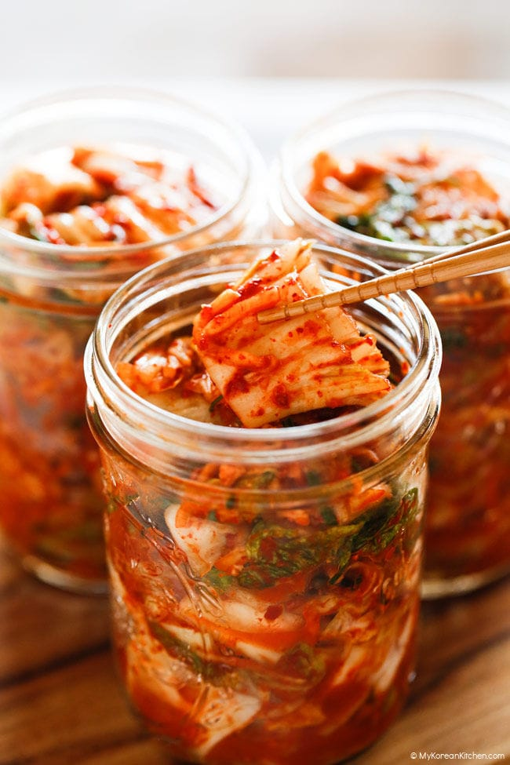

Kimchi Recipe

Ingredients
- Napa cabbage
- salt
- sweet rice flour
- sugar
- water
- garlic
- ginger
- onion
- fish sauce
- fermented squid
- gochugaru
- leek
- carrot
- Korean radish
Steps
- trim Napa cabbage
- Cut Napa cabbage to bite size slices
- Soak cabbage in cold water and add salt
- Let soak for 1.5 hrs and turn over every 30 minutes
- Rinse cabbage
- Drain Cabbage & set aside
- etc.